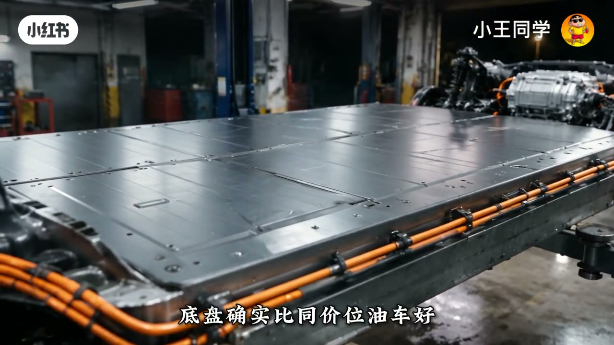

内容要点
修车二十年的「师傅」拦住要定二十万电车低配的年轻人：没固定车位装桩、老婆怀孕四个月还要单程四百公里回老家——别只听销售讲零百与省钱。片子把用车成本、保值、配置、底盘、冬天续航拆开算，最后落到一句：车没有好坏，只有合不合适；百分之九十选错，是拿别人家的账本算自己家的日子。
知识结构
无桩+孕期长途：服务区快充排队不是抽象风险，是具体家庭场景。
托底磕电池换包六万八；外充一度贵，一年省油钱可能只剩一两千。
2026上半年油电三年保值率均值接近；同价位电车低配常砍舒适与智驾硬件。
有桩跑得多开得久→电低配；无桩要长途三五年换→油高配。
二十万价位的油电选择题，关键不在「谁更先进」，而在补能条件、持有年限与家庭出行约束是否匹配。
00:00-00:55先别定：没桩、要跑四百公里
年轻人报喜：二十万电车低配，零百六点八，销售说这价油车连尾灯都看不见。师傅直接打断——你连固定车位都没有，充电桩往哪装？老婆怀孕四个月，过年回老家单程四百公里，难道让她在服务区排队充电？
这一段把「电车省钱」从口号打回生活场景：补能基础设施与家庭行程，比宣传册上的零百数字更硬。
00:55-02:20贬值案例与电费真相
师傅拿出托底磕坏电池包的例子：落地二十万，4S换整个电池包报价六万八，二手贩子只给八万——开一年亏十二万。强调「这还只是贬值」。
接着算电费：没有家充就得靠外面快充，一度一块五到两块；百公里十五度大约两毛多每公里，对比油车七个油约五毛多。一年一万五千公里省四千五，但保险轮胎一扣，可能只剩一两千——「省是真省，但没你想的那么多」。
02:20-04:00保值均值接近，配置与智驾被砍
用2026上半年数据：燃油车三年保值率约46.07%，新能源约44.8%，差距约1.27个百分点——「电车三年大贬值」被说成老黄历，但均值接近不等于每台都稳；特斯拉Model Y可到54%以上，冷门电车可掉到四成以下。
同价位体验差更刺眼：二十万电车低配可能没座椅通风加热；油车高配合资车常见通风加热甚至记忆。大屏一样大，芯片与传感器却可能被砍，且出厂定死后期加不了。
04:00-06:01动力底盘冬天，以及适合谁
动力上电车低配零百六秒多、同价油车八秒多，市区起步确实爽，但一百到一百二再加速优势收窄；孕期还要考虑「电门直给」的体感。底盘要分纯电平台与油改电——二十万以下不少是油改电，坐姿高、侧倾像开船。
冬天零下五度高速续航达成率约六折：标称五百实际约三百，四百公里长途必须中途快充。决策框架：有桩、一年两万以上、打算开八年→电车低配；无桩、一年一万五、三五年换、要跑长途→油车高配。收尾：「百分之九十的人选错，不是选错车，是拿别人家的账本算自己家的日子。」

完整转录（287段）
以下文本由 Whisper medium 模型自动转录，可能存在少量识别误差，已尽可能修正。
邱哥
我定了
二十万
电车低配
零百六秒八
销售说这个价格
邮车连它尾都看不见
你定个屁
你连固定车位都没有
充电桩往哪装
你老婆怀孕四个月
过年带她回老家
单程四百公里
你打算让她挺着肚子
在服务区排队充电
高速服务区不是有快充吗
你过来看
这台车
二十万买的
低配
上个月托底
电池包磕了个口子
4S店报价
换整个电池包
六万八
二手贩子现在给八万
他开了一年
落地二十万
现在值八万
亏十二万
你先坐下
这还只是贬值
我给你从头算
算完你还想买
我陪你去定
第一件事
你家有充电桩吗
没有
电车不是一公里几分钱吗
那是加充
你有吗
没有
外面快充
一度电一块五到两块
算你百公里十五度电
一公里两毛多
油车百公里七个油
一公里五毛多
差三毛
一年跑一万五
省四千五
但保险和轮胎一扣
一年省一两千
省是真省
但没你想的那么多
第二件事
你打算开几年
可能三五年吧
看情况
那就得看贬值
二零二六年上半年数据
燃油车三年保质率
百分之四十六点零七
新能源车百分之四十四点八
差距只有一点二七个百分点
网上还在说
电车三年大补折
那是老黄历了
现在油车跌得更狠
二零二二年油车三年保质率
还有百分之六十七点六
四年跌了二十一个点
那差不多啊
均值差不多
但具体到车型差别大了
特斯拉模特Y
三年保质率百分之五十四以上
一些冷门电车三年掉到四成以下
你要买的低通电车
大概率不是特斯拉
油车高配呢
三年保质率
大概在百分之四十五到百分之五十
稳
但也不是铁板一块
关键是
你买的是二十万的车
三年后油车卖八万五到九万
电车低配
卖七万五到八万
差一万左右
还有一笔
二十万的电车
一年官降两三万涨价了
但电车技术迭代太快
八百伏置价芯片
半股品牌电池
每隔几个月就更新一轮
你今年买的车
明年可能就比较上一代
油车换季慢
三年一改款
你的车不会突然变成老款
那我到底亏多少
我这么跟你说
油车高配
三年总花费
油费
保险
这也是八万上下
差不了太多
真正的差别不在钱
在你每天怎么用
车配置
你二十万买电车低配
抹为座椅
没通风 没加热
夏天你后背湿透
冬天上车冰屁股
油车高配
这个价位的合资车
座椅通风加热基本都有
有的还带记忆
你和你老婆换着开
一按就回到自己的位置
电车不是有大屏吗
大屏有大屏
但你注意
电车低配的屏幕
可能跟高配一样大
但里面的芯片
质加硬件可能被砍了
质加这东西
不是屏幕能解决的
是芯片和传感器决定的
出厂定死了
后期加不了
动力呢
电车不是快很多吗
快
二十万的电车低配
零百六秒多
同价位油车高配
八秒多
差两秒
那不就完了
快两秒还不止
你听我说完
电车快
是因为电机一踩
就有最大扭矩
起步和低速响应
特别好
红绿灯起步
市区超车
确实爽
但高速再加速
比如你一百马想超车
踩到一百二
电车的优势
就没那么大了
而且你老婆怀孕
你一脚电门下去
她晕不晕
电车那个加速是直给的
没有缓冲
那底盘呢
我听说电车底盘好
得分平台
纯电平台的车
专门为电车设计的底盘
电池铺在车底
重心低
过弯稳
过减速带柔
高速不飘
二十万这个价位
如果是纯电平台
底盘确实比同价位油车好
但如果是油改电
拿油车底盘改的
电池往底盘侠依C
坐姿高了
重心也高了
过弯侧倾明显
开起来跟开船似的
二十万以下
不少电车都是油改电
你得分清楚
那油车高配的底盘呢
这个最好的的合资油车
底盘调了十几年了
但不会出错
滤震 高速稳定性
转向手感 成熟
你开个十年八年
它还是那个感觉
还有个事你得知道
冬天
冬天怎么了
二零二六年冬天实测数据
零下五度跑高速
主流电车续航达成率
普遍六折左右
你标称五百公里的车
冬天高速实际跑三百公里
你从这儿开到老家四百公里
中间必须冲一次
快冲半小时还得排队
油车呢
加满油五分钟
冬天夏天都一样
续航不打折
我修了二十年车
二十万这个价位
我告诉你什么人适合买什么
如果你家有充电桩
一年跑两万公里以上
打算开八年不换车
电车低配适合你
你省的电费能覆盖掉贬值
动力好 用车便宜
如果你没装
一年跑一万五以上
三五年可能换车
过年要跑长途
油车高配适合你
配置舒服 底盘成熟
保质率不差 加油方便
那我呢
你没装
一年跑一万五
老婆怀孕
过年四百公里
你说呢
油车
我只是告诉你账怎么算
最后你自己定
那百分之九十的选错
错在哪儿
错在只听销售讲优点
不问自己怎么用
电车销售跟你说加速快
省钱
他不问你有没有装
油车销售跟你说皮实耐用
他不问你一年跑多少
车没有好坏
只有合不合适
周哥
最后一个问题
电车以后保质率
会不会越来越差
看技术
二零二七年固态电池
要小批量装车了
成本是现在液态电池的
五倍以上
短期内跟普通人没关系
但半固态已经在路上了
你今年买的液态电车
三年后二手贩子
可能拿上一代技术压价
那山鸡一百多年了
不会被下一代技术淘汰
但话说回来
你买车是开的
不是卖的
真打算开八年
别管保质率
打算三五年换
那就得算
同样二十万
燃油高配和电车低配
没有标准答案
有加充
跑得多
开得久
电车低配省
没加充
跑长途
三五年换车
油车高配稳
百分之九十的人选错
不是选错车
是拿别人家的账本
算自己家的日子